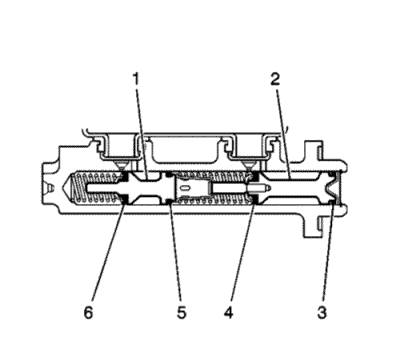

Prueba de fugas internas del sistema de frenos
Advertencia: Consulte Advertencia de líquido de frenos irritante en la sección Prólogo.
Precaución: Consulte Advertencia sobre los efectos del líquido de frenos sobre la pintura y los componentes eléctricos en la sección Prólogo.
- Arranque el motor y déjelo al ralentí.
- Aplique una presión ligera y continua al pedal del freno. Observe la sensación y el recorrido del pedal del freno.
- Suelte los frenos y apague el encendido.
- Si el pedal del freno parece blando, pero su recorrido no es excesivo, realice los siguientes pasos:

- Si el pedal del freno no parecía blando, pero su recorrido era excesivo, realice los siguientes pasos:
| 5.1. | Afloje las tuercas de soporte del servofreno del cilindro maestro al freno. |
| 5.2. | Separe con cuidado el cilindro maestro del servofreno justo lo suficiente para revisar la superficie de soporte del cilindro maestro. |
| 5.3. | Revise la superficie de soporte del cilindro maestro en el pistón primario (2) para ver si hay fugas de líquido de frenos. |
- Si el cilindro maestro presenta una fuga en torno al pistón primario (2), entonces la junta primaria (4) o la junta secundaria (3) del pistón primario tiene una fuga y hay que revisar o sustituir el cilindro maestro.
- Si el pistón primario (2) del cilindro maestro no presenta ninguna fuga, purgue la presión del sistema de frenos. Consultar Purga de aire del sistema de frenos hidráulicos .
- Si la aplicación del pedal del freno no parece blando y el recorrido del pedal del freno fue uniforme al principio y no excesivo, pero luego fue cayendo gradualmente, entonces hay que revisar o sustituir el cilindro maestro debido a una fuga interna pasado el pistón secundario (1) de la junta primaria (6) o junta secundaria (5) del pistón secundario.
- Si al pisar el pedal de freno no da una sensación blanda y la distancia del pedal de freno era inicialmente constante y no excesiva, y luego bajaba ligeramente, y luego volvía a ser constante de nuevo, entonces la válvula moduladora de presión de freno (BPMV) podría tener una fuga interna, y puede que se tenga que sustituir.
| © Copyright Chevrolet. Reservados todos los derechos |